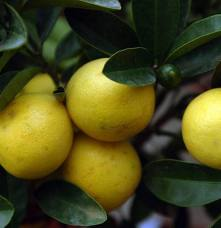

Agrume

Agrume (Tous les agrumes : citrons oranges pamplemousses etc.)
Attention : hautement toxique par ingestion pour le Korat !
Partie toxique pour les chats en général et le Korat en particulier :
Tout.
Symptômes du processus pathologique :
Non décrits. Merci de contacter le Korat Club de France si vous avez des informations à ce sujet : retour d'expérience avec votre Korat ou encore lecture sérieuse théorique par exemple.
Origine de la toxicité (principe actif) :
Cristaux d'oxalate de calcium.
Amour Korat's Irma prenant le frais au frigo parmi des pomelos